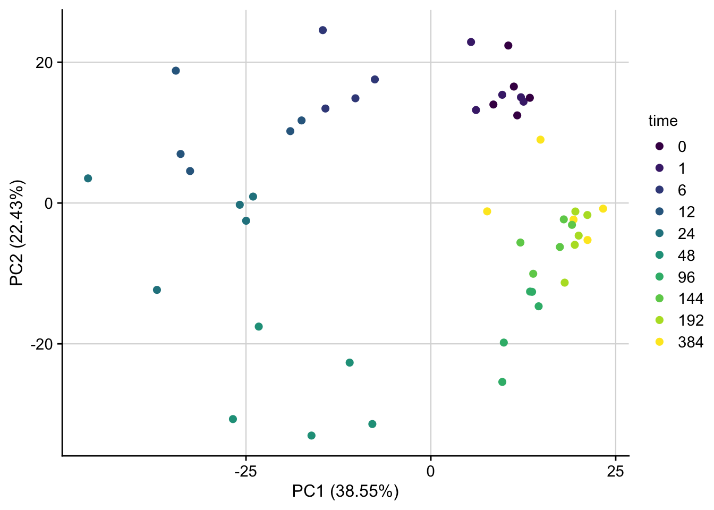
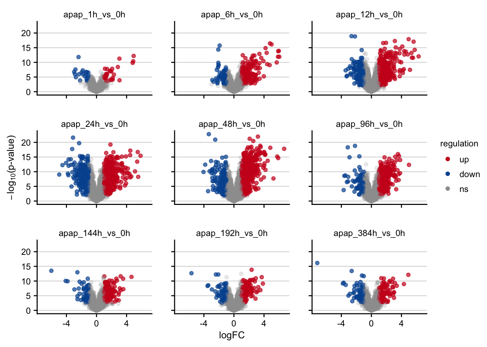
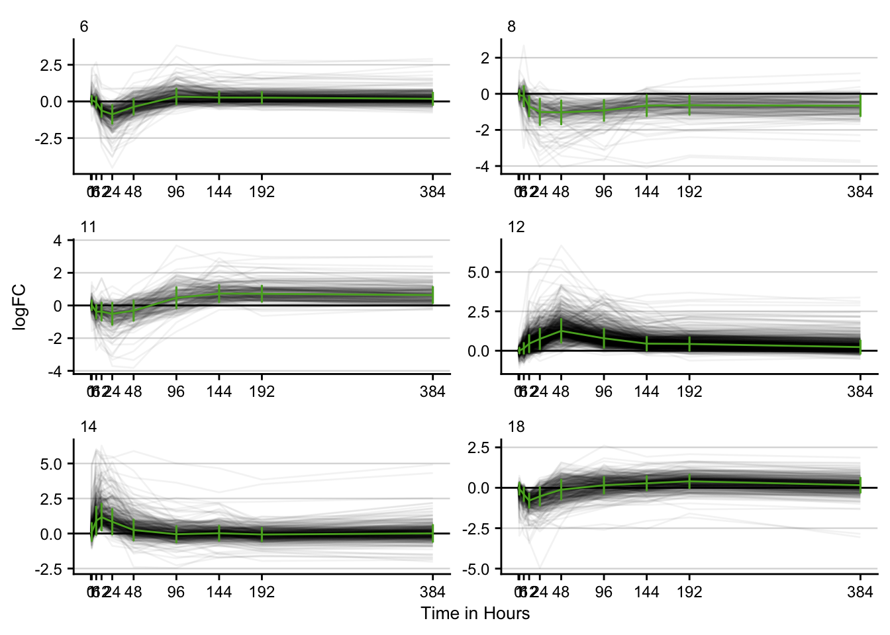

Last updated: 2020-12-20
Checks: 6 1
Knit directory: meta-liver/
This reproducible R Markdown analysis was created with workflowr (version 1.6.2). The Checks tab describes the reproducibility checks that were applied when the results were created. The Past versions tab lists the development history.
Great! Since the R Markdown file has been committed to the Git repository, you know the exact version of the code that produced these results.
Great job! The global environment was empty. Objects defined in the global environment can affect the analysis in your R Markdown file in unknown ways. For reproduciblity it’s best to always run the code in an empty environment.
The command set.seed(20201218) was run prior to running the code in the R Markdown file. Setting a seed ensures that any results that rely on randomness, e.g. subsampling or permutations, are reproducible.
Great job! Recording the operating system, R version, and package versions is critical for reproducibility.
To ensure reproducibility of the results, delete the cache directory mouse-acute-apap_cache and re-run the analysis. To have workflowr automatically delete the cache directory prior to building the file, set delete_cache = TRUE when running wflow_build() or wflow_publish().
Great job! Using relative paths to the files within your workflowr project makes it easier to run your code on other machines.
Great! You are using Git for version control. Tracking code development and connecting the code version to the results is critical for reproducibility.
The results in this page were generated with repository version bea437a. See the Past versions tab to see a history of the changes made to the R Markdown and HTML files.
Note that you need to be careful to ensure that all relevant files for the analysis have been committed to Git prior to generating the results (you can use wflow_publish or wflow_git_commit). workflowr only checks the R Markdown file, but you know if there are other scripts or data files that it depends on. Below is the status of the Git repository when the results were generated:
Ignored files:
Ignored: .DS_Store
Ignored: .Rhistory
Ignored: .Rproj.user/
Ignored: analysis/meta-analysis-chronic-vs-acute_cache/
Ignored: analysis/mouse-acute-apap_cache/
Ignored: analysis/mouse-acute-bdl_cache/
Ignored: analysis/mouse-acute-ccl4_cache/
Ignored: analysis/mouse-acute-lps_cache/
Ignored: analysis/mouse-acute-ph_cache/
Ignored: analysis/mouse-acute-tunicamycin_cache/
Ignored: analysis/mouse-chronic-ccl4_cache/
Ignored: code/.DS_Store
Ignored: data/.DS_Store
Ignored: data/annotation/
Ignored: data/mouse-acute-apap/
Ignored: data/mouse-acute-bdl/
Ignored: data/mouse-acute-ccl4/
Ignored: data/mouse-acute-lps/
Ignored: data/mouse-acute-ph/
Ignored: data/mouse-acute-tunicamycin/
Ignored: data/mouse-chronic-ccl4/
Ignored: external_software/.DS_Store
Ignored: external_software/README.html
Ignored: external_software/stem/.DS_Store
Ignored: output/.DS_Store
Ignored: output/meta-chronic-vs-acute/
Ignored: output/mouse-acute-apap/
Ignored: output/mouse-acute-bdl/
Ignored: output/mouse-acute-ccl4/
Ignored: output/mouse-acute-lps/
Ignored: output/mouse-acute-ph/
Ignored: output/mouse-acute-tunicamycin/
Ignored: output/mouse-chronic-ccl4/
Ignored: renv/library/
Ignored: renv/staging/
Unstaged changes:
Modified: analysis/meta-analysis-chronic-vs-acute.Rmd
Note that any generated files, e.g. HTML, png, CSS, etc., are not included in this status report because it is ok for generated content to have uncommitted changes.
These are the previous versions of the repository in which changes were made to the R Markdown (analysis/mouse-acute-apap.Rmd) and HTML (docs/mouse-acute-apap.html) files. If you’ve configured a remote Git repository (see ?wflow_git_remote), click on the hyperlinks in the table below to view the files as they were in that past version.
| File | Version | Author | Date | Message |
|---|---|---|---|---|
| html | bea437a | christianholland | 2020-12-20 | Build site. |
| Rmd | c78e883 | christianholland | 2020-12-20 | stem characterization |
| html | af38450 | christianholland | 2020-12-19 | Build site. |
| Rmd | 78a25d5 | christianholland | 2020-12-19 | minor changes |
| html | b13a484 | christianholland | 2020-12-19 | Build site. |
| Rmd | 8954d60 | christianholland | 2020-12-19 | added apap analysis |
Here we analysis a mouse model of APAP induced acute liver damage. The transcriptomic profiles were measured at 10 different time points ranging from 1 hour to 16 days.
These libraries and sources are used for this analysis.
library(mouse4302.db)
library(tidyverse)
library(tidylog)
library(here)
library(oligo)
library(annotate)
library(limma)
library(biobroom)
library(progeny)
library(dorothea)
library(janitor)
library(msigdf) # remotes::install_github("ToledoEM/msigdf@v7.1")
library(AachenColorPalette)
library(cowplot)
library(lemon)
library(patchwork)
options("tidylog.display" = list(print))
source(here("code/utils-microarray.R"))
source(here("code/utils-utils.R"))
source(here("code/utils-plots.R"))Definition of global variables that are used throughout this analysis.
# i/o
data_path <- "data/mouse-acute-apap"
output_path <- "output/mouse-acute-apap"
# graphical parameters
# fontsize
fz <- 9The array quality is controlled based on the relative log expression values (RLE) and the normalized unscaled standard errors (NUSE).
# load cel files and check quality
platforms <- readRDS(here("data/annotation/platforms.rds"))
raw_eset <- list.celfiles(here(data_path), listGzipped = T, full.names = T) %>%
read.celfiles() %>%
ma_qc() # Discarding in total 1 arrays: 6h_m3_(Mouse430_2).CEL
#> Reading in : /Users/cholland/Projects/meta-liver/data/mouse-acute-apap/12h_m1_(Mouse430_2).CEL
#> Reading in : /Users/cholland/Projects/meta-liver/data/mouse-acute-apap/12h_m2_(Mouse430_2).CEL
#> Reading in : /Users/cholland/Projects/meta-liver/data/mouse-acute-apap/12h_m3_(Mouse430_2).CEL
#> Reading in : /Users/cholland/Projects/meta-liver/data/mouse-acute-apap/12h_m4_(Mouse430_2).CEL
#> Reading in : /Users/cholland/Projects/meta-liver/data/mouse-acute-apap/12h_m5_(Mouse430_2).CEL
#> Reading in : /Users/cholland/Projects/meta-liver/data/mouse-acute-apap/16d_m1_(Mouse430_2).CEL
#> Reading in : /Users/cholland/Projects/meta-liver/data/mouse-acute-apap/16d_m2_(Mouse430_2).CEL
#> Reading in : /Users/cholland/Projects/meta-liver/data/mouse-acute-apap/16d_m3_(Mouse430_2).CEL
#> Reading in : /Users/cholland/Projects/meta-liver/data/mouse-acute-apap/16d_m4_(Mouse430_2).CEL
#> Reading in : /Users/cholland/Projects/meta-liver/data/mouse-acute-apap/16d_m5_(Mouse430_2).CEL
#> Reading in : /Users/cholland/Projects/meta-liver/data/mouse-acute-apap/1d_m1_(Mouse430_2).CEL
#> Reading in : /Users/cholland/Projects/meta-liver/data/mouse-acute-apap/1d_m2_(Mouse430_2).CEL
#> Reading in : /Users/cholland/Projects/meta-liver/data/mouse-acute-apap/1d_m3_(Mouse430_2).CEL
#> Reading in : /Users/cholland/Projects/meta-liver/data/mouse-acute-apap/1d_m4_(Mouse430_2).CEL
#> Reading in : /Users/cholland/Projects/meta-liver/data/mouse-acute-apap/1d_m5_(Mouse430_2).CEL
#> Reading in : /Users/cholland/Projects/meta-liver/data/mouse-acute-apap/1h_m1_(Mouse430_2).CEL
#> Reading in : /Users/cholland/Projects/meta-liver/data/mouse-acute-apap/1h_m2_(Mouse430_2).CEL
#> Reading in : /Users/cholland/Projects/meta-liver/data/mouse-acute-apap/1h_m3_(Mouse430_2).CEL
#> Reading in : /Users/cholland/Projects/meta-liver/data/mouse-acute-apap/1h_m4_(Mouse430_2).CEL
#> Reading in : /Users/cholland/Projects/meta-liver/data/mouse-acute-apap/1h_m5_(Mouse430_2).CEL
#> Reading in : /Users/cholland/Projects/meta-liver/data/mouse-acute-apap/2d_m1_(Mouse430_2).CEL
#> Reading in : /Users/cholland/Projects/meta-liver/data/mouse-acute-apap/2d_m2_(Mouse430_2).CEL
#> Reading in : /Users/cholland/Projects/meta-liver/data/mouse-acute-apap/2d_m3_(Mouse430_2).CEL
#> Reading in : /Users/cholland/Projects/meta-liver/data/mouse-acute-apap/2d_m4_(Mouse430_2).CEL
#> Reading in : /Users/cholland/Projects/meta-liver/data/mouse-acute-apap/2d_m5_(Mouse430_2).CEL
#> Reading in : /Users/cholland/Projects/meta-liver/data/mouse-acute-apap/4d_m1_(Mouse430_2).CEL
#> Reading in : /Users/cholland/Projects/meta-liver/data/mouse-acute-apap/4d_m2_(Mouse430_2).CEL
#> Reading in : /Users/cholland/Projects/meta-liver/data/mouse-acute-apap/4d_m3_(Mouse430_2).CEL
#> Reading in : /Users/cholland/Projects/meta-liver/data/mouse-acute-apap/4d_m4_(Mouse430_2).CEL
#> Reading in : /Users/cholland/Projects/meta-liver/data/mouse-acute-apap/4d_m5_(Mouse430_2).CEL
#> Reading in : /Users/cholland/Projects/meta-liver/data/mouse-acute-apap/6d_m1_(Mouse430_2).CEL
#> Reading in : /Users/cholland/Projects/meta-liver/data/mouse-acute-apap/6d_m2_(Mouse430_2).CEL
#> Reading in : /Users/cholland/Projects/meta-liver/data/mouse-acute-apap/6d_m3_(Mouse430_2).CEL
#> Reading in : /Users/cholland/Projects/meta-liver/data/mouse-acute-apap/6d_m4_(Mouse430_2).CEL
#> Reading in : /Users/cholland/Projects/meta-liver/data/mouse-acute-apap/6d_m5_(Mouse430_2).CEL
#> Reading in : /Users/cholland/Projects/meta-liver/data/mouse-acute-apap/6h_m1_(Mouse430_2).CEL
#> Reading in : /Users/cholland/Projects/meta-liver/data/mouse-acute-apap/6h_m2_(Mouse430_2).CEL
#> Reading in : /Users/cholland/Projects/meta-liver/data/mouse-acute-apap/6h_m3_(Mouse430_2).CEL
#> Reading in : /Users/cholland/Projects/meta-liver/data/mouse-acute-apap/6h_m4_(Mouse430_2).CEL
#> Reading in : /Users/cholland/Projects/meta-liver/data/mouse-acute-apap/6h_m5_(Mouse430_2).CEL
#> Reading in : /Users/cholland/Projects/meta-liver/data/mouse-acute-apap/8d_m1_(Mouse430_2).CEL
#> Reading in : /Users/cholland/Projects/meta-liver/data/mouse-acute-apap/8d_m2_(Mouse430_2).CEL
#> Reading in : /Users/cholland/Projects/meta-liver/data/mouse-acute-apap/8d_m3_(Mouse430_2).CEL
#> Reading in : /Users/cholland/Projects/meta-liver/data/mouse-acute-apap/8d_m4_(Mouse430_2).CEL
#> Reading in : /Users/cholland/Projects/meta-liver/data/mouse-acute-apap/8d_m5_(Mouse430_2).CEL
#> Reading in : /Users/cholland/Projects/meta-liver/data/mouse-acute-apap/control_m1_(Mouse430_2).CEL
#> Reading in : /Users/cholland/Projects/meta-liver/data/mouse-acute-apap/control_m2_(Mouse430_2).CEL
#> Reading in : /Users/cholland/Projects/meta-liver/data/mouse-acute-apap/control_m3_(Mouse430_2).CEL
#> Reading in : /Users/cholland/Projects/meta-liver/data/mouse-acute-apap/control_m4_(Mouse430_2).CEL
#> Reading in : /Users/cholland/Projects/meta-liver/data/mouse-acute-apap/control_m5_(Mouse430_2).CELProbe intensities are normalized with the rma() function. Probes are annotated with MGI symbols.
eset <- rma(raw_eset)
#> Background correcting
#> Normalizing
#> Calculating Expression
# annotate microarray probes with mgi symbols
expr <- ma_annotate(eset, platforms)
colnames(expr) <- str_c("sample",
str_remove(colnames(expr), "_\\(Mouse430_2\\).CEL"),
sep = "_"
)
# save normalized expression
saveRDS(expr, here(output_path, "normalized_expression.rds"))Meta information are parsed from the sample names.
# build meta data
meta <- colnames(expr) %>%
enframe(name = NULL, value = "sample") %>%
separate(sample, into = c("tmp", "key", "rep"), remove = F) %>%
dplyr::select(-tmp) %>%
mutate(
rep = parse_number(rep),
time = parse_number(key)
) %>%
mutate(time = case_when(
str_detect(key, "d") ~ time * 24,
str_detect(key, "h") ~ time,
str_detect(key, "control") ~ 0
)) %>%
mutate(time = ordered(time)) %>%
mutate(group = case_when(
str_detect(key, "d") ~ str_c("d", parse_number(key)),
str_detect(key, "h") ~ str_c("h", parse_number(key)),
str_detect(key, "control") ~ key
)) %>%
mutate(group = factor(group, levels = c(
"control", "h1", "h6", "h12", "d1", "d2",
"d4", "d6", "d8", "d16"
)))
#> mutate: converted 'rep' from character to double (0 new NA)
#> new variable 'time' (double) with 8 unique values and 10% NA
#> mutate: changed 35 values (71%) of 'time' (5 fewer NA)
#> mutate: converted 'time' from double to ordered factor (0 new NA)
#> mutate: new variable 'group' (character) with 10 unique values and 0% NA
#> mutate: converted 'group' from character to factor (0 new NA)
# save meta data
saveRDS(meta, here(output_path, "meta_data.rds"))PCA plot of normalized expression data contextualized based on the time point. Only the top 1000 most variable genes are used as features.
expr <- readRDS(here(output_path, "normalized_expression.rds"))
meta <- readRDS(here(output_path, "meta_data.rds"))
pca_result <- do_pca(expr, meta, top_n_var_genes = 1000)
#> left_join: added 4 columns (key, rep, time, group)
#> > rows only in x 0
#> > rows only in y ( 0)
#> > matched rows 49
#> > ====
#> > rows total 49
saveRDS(pca_result, here(output_path, "pca_result.rds"))
plot_pca(pca_result, feature = "time") +
my_theme()
| Version | Author | Date |
|---|---|---|
| b13a484 | christianholland | 2020-12-19 |
Differential gene expression analysis via limma with the aim to identify the effect of APAP intoxication for the different time points.
# load expression and meta data
expr <- readRDS(here(output_path, "normalized_expression.rds"))
meta <- readRDS(here(output_path, "meta_data.rds"))
stopifnot(colnames(expr) == meta$sample)
# build design matrix
design <- model.matrix(~ 0 + group, data = meta)
rownames(design) <- meta$sample
colnames(design) <- levels(meta$group)
# define contrasts
contrasts <- makeContrasts(
# effect of apap treatment
apap_1h_vs_0h = h1 - control,
apap_6h_vs_0h = h6 - control,
apap_12h_vs_0h = h12 - control,
apap_24h_vs_0h = d1 - control,
apap_48h_vs_0h = d2 - control,
apap_96h_vs_0h = d4 - control,
apap_144h_vs_0h = d6 - control,
apap_192h_vs_0h = d8 - control,
apap_384h_vs_0h = d16 - control,
# consecutive time point comparison
consec_1h_vs_0h = h1 - control,
consec_6h_vs_1h = h6 - h1,
consec_12h_vs_6h = h12 - h6,
consec_24h_vs_12h = d1 - h12,
consec_48h_vs_24h = d2 - d1,
consec_96h_vs_48h = d4 - d2,
consec_144h_vs_96h = d6 - d4,
consec_192h_vs_144h = d8 - d6,
consec_384h_vs_192h = d16 - d8,
levels = design
)
limma_result <- run_limma(expr, design, contrasts) %>%
assign_deg()
#> select: renamed 3 variables (contrast, logFC, pval) and dropped one variable
#> group_by: one grouping variable (contrast)
#> mutate (grouped): new variable 'fdr' (double) with 133,908 unique values and 0% NA
#> ungroup: no grouping variables
#> mutate: new variable 'regulation' (character) with 3 unique values and 0% NA
#> mutate: converted 'regulation' from character to factor (0 new NA)
deg_df <- limma_result %>%
mutate(contrast = factor(contrast, levels = c(
"apap_1h_vs_0h", "apap_6h_vs_0h", "apap_12h_vs_0h", "apap_24h_vs_0h",
"apap_48h_vs_0h", "apap_96h_vs_0h", "apap_144h_vs_0h", "apap_192h_vs_0h",
"apap_384h_vs_0h",
"consec_1h_vs_0h", "consec_6h_vs_1h", "consec_12h_vs_6h",
"consec_24h_vs_12h", "consec_48h_vs_24h", "consec_96h_vs_48h",
"consec_144h_vs_96h", "consec_192h_vs_144h", "consec_384h_vs_192h"
))) %>%
mutate(contrast_reference = case_when(
str_detect(contrast, "apap") ~ "apap",
str_detect(contrast, "consec") ~ "consec"
))
#> mutate: changed 0 values (0%) of 'contrast' (0 new NA)
#> mutate: new variable 'contrast_reference' (character) with 2 unique values and 0% NA
saveRDS(deg_df, here(output_path, "limma_result.rds"))Volcano plots visualizing the effect of APAP on gene expression.
df <- readRDS(here(output_path, "limma_result.rds"))
df %>%
filter(contrast_reference == "apap") %>%
plot_volcano() +
my_theme(grid = "y", fsize = fz)
#> filter: removed 184,581 rows (50%), 184,581 rows remaining
#> rename: renamed one variable (p)
| Version | Author | Date |
|---|---|---|
| b13a484 | christianholland | 2020-12-19 |
Gene expression trajectories are clustered using the STEM software. The cluster algorithm is described here.
# prepare input for stem analysis
df = readRDS(here(output_path, "limma_result.rds"))
stem_inputs = df %>%
mutate(class = str_c("Hour ", parse_number(as.character(contrast)))) %>%
mutate(class = factor(class, levels = unique(.$class))) %>%
select(gene, class, logFC, contrast_reference)
#> mutate: new variable 'class' (character) with 9 unique values and 0% NA
#> mutate: converted 'class' from character to factor (0 new NA)
#> select: dropped 5 variables (contrast, statistic, pval, fdr, regulation)
stem_inputs %>%
filter(contrast_reference == "apap") %>%
select(-contrast_reference) %>%
pivot_wider(names_from = class, values_from = logFC) %>%
write_delim(here(output_path, "stem/input/apap.txt"), delim = "\t")
#> filter: removed 184,581 rows (50%), 184,581 rows remaining
#> select: dropped one variable (contrast_reference)
#> pivot_wider: reorganized (class, logFC) into (Hour 1, Hour 6, Hour 12, Hour 24, Hour 48, …) [was 184581x3, now 20509x10]STEM is implemented in Java. The .jar file is called from R. Only significant time series clusters are visualized.
# execute stem
stem_res <- run_stem(here(output_path, "stem"), clear_output = T)
#> distinct: no rows removed
#> mutate: new variable 'gene' (character) with 20,509 unique values and 0% NA
#> distinct: no rows removed
#> mutate: new variable 'key' (character) with one unique value and 0% NA
#> select: dropped one variable (spot)
#> gather: reorganized (x0, hour_1, hour_6, hour_12, hour_24, …) into (time, value) [was 2528x13, now 25280x5]
#> mutate: converted 'time' from character to double (0 new NA)
#> mutate: new variable 'key' (character) with one unique value and 0% NA
#> select: renamed 4 variables (profile, y_coords, size, p) and dropped 2 variables
#> inner_join: added 3 columns (y_coords, size, p)
#> > rows only in x ( 0)
#> > rows only in y ( 0)
#> > matched rows 25,280
#> > ========
#> > rows total 25,280
#> inner_join: added one column (symbol)
#> > rows only in x ( 0)
#> > rows only in y (17,981)
#> > matched rows 25,280
#> > ========
#> > rows total 25,280
#> transmute: dropped one variable (symbol)
#> changed 25,020 values (99%) of 'gene' (0 new NA)
saveRDS(stem_res, here(output_path, "stem_result.rds"))
stem_res %>%
filter(p <= 0.05) %>%
filter(key == "apap") %>%
distinct() %>%
plot_stem_profiles(model_profile = F, ncol = 2) +
labs(x = "Time in Hours", y = "logFC") +
my_theme(grid = "y", fsize = fz)
#> filter: removed 3,340 rows (13%), 21,940 rows remaining
#> filter: no rows removed
#> distinct: no rows removed
#> group_by: 4 grouping variables (key, profile, p, time)
#> ungroup: no grouping variables
| Version | Author | Date |
|---|---|---|
| b13a484 | christianholland | 2020-12-19 |
STEM clusters are characterized by GO terms, PROGENy’s pathways and DoRothEA’s TFs. As statistic over-representation analysis is used.
stem_res = readRDS(here(output_path, "stem_result.rds"))
signatures = stem_res %>%
filter(p <= 0.05) %>%
distinct(profile, gene, p_profile = p)
#> filter: removed 3,340 rows (13%), 21,940 rows remaining
#> distinct: removed 19,746 rows (90%), 2,194 rows remaining
genesets = load_genesets() %>%
filter(confidence %in% c(NA,"A", "B", "C"))
#> filter: removed 2,340,732 rows (80%), 597,560 rows remaining
#> select: renamed one variable (gene) and dropped 2 variables
#> mutate: new variable 'group' (character) with one unique value and 0% NA
#> gather: reorganized (Androgen, EGFR, Estrogen, Hypoxia, JAK-STAT, …) into (geneset, weight) [was 1299x15, now 18186x3]
#> filter: removed 16,785 rows (92%), 1,401 rows remaining
#> select: dropped one variable (weight)
#> mutate: new variable 'group' (character) with one unique value and 0% NA
#> select: renamed 2 variables (geneset, gene) and dropped one variable
#> mutate: new variable 'group' (character) with one unique value and 0% NA
#> filter: removed 396,818 rows (39%), 612,694 rows remaining
ora_res = signatures %>%
nest(sig = c(-profile)) %>%
dplyr::mutate(ora = sig %>% map(run_ora, sets = genesets, min_size = 10,
options = list(alternative = "greater"),
background_n = 20000)) %>%
select(-sig) %>%
unnest(ora)
#> add_count: new variable 'n' (integer) with 643 unique values and 0% NA
#> filter: removed 13,996 rows (2%), 598,698 rows remaining
#> select: dropped one variable (n)
#> mutate: new variable 'contingency_table' (list) with 1,774 unique values and 0% NA
#> mutate: new variable 'stat' (list) with 1,682 unique values and 0% NA
#> group_by: one grouping variable (group)
#> mutate (grouped): new variable 'fdr' (double) with 1,160 unique values and 0% NA
#> ungroup: no grouping variables
#> select: dropped 4 variables (set, conf.low, conf.high, method)
#> add_count: new variable 'n' (integer) with 643 unique values and 0% NA
#> filter: removed 13,996 rows (2%), 598,698 rows remaining
#> select: dropped one variable (n)
#> mutate: new variable 'contingency_table' (list) with 1,670 unique values and 0% NA
#> mutate: new variable 'stat' (list) with 1,562 unique values and 0% NA
#> group_by: one grouping variable (group)
#> mutate (grouped): new variable 'fdr' (double) with 1,171 unique values and 0% NA
#> ungroup: no grouping variables
#> select: dropped 4 variables (set, conf.low, conf.high, method)
#> add_count: new variable 'n' (integer) with 643 unique values and 0% NA
#> filter: removed 13,996 rows (2%), 598,698 rows remaining
#> select: dropped one variable (n)
#> mutate: new variable 'contingency_table' (list) with 1,352 unique values and 0% NA
#> mutate: new variable 'stat' (list) with 1,200 unique values and 0% NA
#> group_by: one grouping variable (group)
#> mutate (grouped): new variable 'fdr' (double) with 191 unique values and 0% NA
#> ungroup: no grouping variables
#> select: dropped 4 variables (set, conf.low, conf.high, method)
#> add_count: new variable 'n' (integer) with 643 unique values and 0% NA
#> filter: removed 13,996 rows (2%), 598,698 rows remaining
#> select: dropped one variable (n)
#> mutate: new variable 'contingency_table' (list) with 1,173 unique values and 0% NA
#> mutate: new variable 'stat' (list) with 929 unique values and 0% NA
#> group_by: one grouping variable (group)
#> mutate (grouped): new variable 'fdr' (double) with 387 unique values and 0% NA
#> ungroup: no grouping variables
#> select: dropped 4 variables (set, conf.low, conf.high, method)
#> add_count: new variable 'n' (integer) with 643 unique values and 0% NA
#> filter: removed 13,996 rows (2%), 598,698 rows remaining
#> select: dropped one variable (n)
#> mutate: new variable 'contingency_table' (list) with 1,299 unique values and 0% NA
#> mutate: new variable 'stat' (list) with 1,138 unique values and 0% NA
#> group_by: one grouping variable (group)
#> mutate (grouped): new variable 'fdr' (double) with 674 unique values and 0% NA
#> ungroup: no grouping variables
#> select: dropped 4 variables (set, conf.low, conf.high, method)
#> add_count: new variable 'n' (integer) with 643 unique values and 0% NA
#> filter: removed 13,996 rows (2%), 598,698 rows remaining
#> select: dropped one variable (n)
#> mutate: new variable 'contingency_table' (list) with 1,400 unique values and 0% NA
#> mutate: new variable 'stat' (list) with 1,175 unique values and 0% NA
#> group_by: one grouping variable (group)
#> mutate (grouped): new variable 'fdr' (double) with 543 unique values and 0% NA
#> ungroup: no grouping variables
#> select: dropped 4 variables (set, conf.low, conf.high, method)
#> add_count: new variable 'n' (integer) with 643 unique values and 0% NA
#> filter: removed 13,996 rows (2%), 598,698 rows remaining
#> select: dropped one variable (n)
#> mutate: new variable 'contingency_table' (list) with 1,261 unique values and 0% NA
#> mutate: new variable 'stat' (list) with 1,034 unique values and 0% NA
#> group_by: one grouping variable (group)
#> mutate (grouped): new variable 'fdr' (double) with 504 unique values and 0% NA
#> ungroup: no grouping variables
#> select: dropped 4 variables (set, conf.low, conf.high, method)
#> select: dropped one variable (sig)
saveRDS(ora_res, here(output_path, "stem_characterization.rds"))
sessionInfo()
#> R version 4.0.2 (2020-06-22)
#> Platform: x86_64-apple-darwin17.0 (64-bit)
#> Running under: macOS Mojave 10.14.5
#>
#> Matrix products: default
#> BLAS: /Library/Frameworks/R.framework/Versions/4.0/Resources/lib/libRblas.dylib
#> LAPACK: /Library/Frameworks/R.framework/Versions/4.0/Resources/lib/libRlapack.dylib
#>
#> locale:
#> [1] en_US.UTF-8/en_US.UTF-8/en_US.UTF-8/C/en_US.UTF-8/en_US.UTF-8
#>
#> attached base packages:
#> [1] parallel stats4 stats graphics grDevices datasets utils
#> [8] methods base
#>
#> other attached packages:
#> [1] pd.mouse430.2_3.12.0 DBI_1.1.0 RSQLite_2.2.1
#> [4] patchwork_1.1.1 lemon_0.4.5 cowplot_1.1.0
#> [7] AachenColorPalette_1.1.2 msigdf_7.1 janitor_2.0.1
#> [10] dorothea_1.0.1 progeny_1.10.0 biobroom_1.20.0
#> [13] broom_0.7.3 limma_3.44.3 annotate_1.66.0
#> [16] XML_3.99-0.5 oligo_1.52.1 Biostrings_2.56.0
#> [19] XVector_0.28.0 oligoClasses_1.50.4 here_1.0.1
#> [22] tidylog_1.0.2 forcats_0.5.0 stringr_1.4.0
#> [25] dplyr_1.0.2 purrr_0.3.4 readr_1.4.0
#> [28] tidyr_1.1.2 tibble_3.0.4 ggplot2_3.3.2
#> [31] tidyverse_1.3.0 mouse4302.db_3.2.3 org.Mm.eg.db_3.11.4
#> [34] AnnotationDbi_1.50.3 IRanges_2.22.2 S4Vectors_0.26.1
#> [37] Biobase_2.48.0 BiocGenerics_0.34.0 workflowr_1.6.2
#>
#> loaded via a namespace (and not attached):
#> [1] colorspace_2.0-0 ellipsis_0.3.1
#> [3] rprojroot_2.0.2 snakecase_0.11.0
#> [5] GenomicRanges_1.40.0 fs_1.5.0
#> [7] rstudioapi_0.13 farver_2.0.3
#> [9] affyio_1.58.0 ggrepel_0.9.0
#> [11] bit64_4.0.5 fansi_0.4.1
#> [13] lubridate_1.7.9.2 xml2_1.3.2
#> [15] codetools_0.2-16 splines_4.0.2
#> [17] knitr_1.30 jsonlite_1.7.2
#> [19] bcellViper_1.24.0 dbplyr_2.0.0
#> [21] BiocManager_1.30.10 compiler_4.0.2
#> [23] httr_1.4.2 backports_1.2.1
#> [25] assertthat_0.2.1 Matrix_1.2-18
#> [27] cli_2.2.0 later_1.1.0.1
#> [29] htmltools_0.5.0 tools_4.0.2
#> [31] gtable_0.3.0 glue_1.4.2
#> [33] GenomeInfoDbData_1.2.3 affxparser_1.60.0
#> [35] Rcpp_1.0.5 cellranger_1.1.0
#> [37] vctrs_0.3.6 preprocessCore_1.50.0
#> [39] iterators_1.0.13 xfun_0.19
#> [41] rvest_0.3.6 lifecycle_0.2.0
#> [43] renv_0.12.3 zlibbioc_1.34.0
#> [45] scales_1.1.1 clisymbols_1.2.0
#> [47] hms_0.5.3 promises_1.1.1
#> [49] SummarizedExperiment_1.18.2 yaml_2.2.1
#> [51] gridExtra_2.3 memoise_1.1.0
#> [53] stringi_1.5.3 foreach_1.5.1
#> [55] GenomeInfoDb_1.24.2 rlang_0.4.9
#> [57] pkgconfig_2.0.3 bitops_1.0-6
#> [59] matrixStats_0.57.0 evaluate_0.14
#> [61] lattice_0.20-41 labeling_0.4.2
#> [63] bit_4.0.4 tidyselect_1.1.0
#> [65] plyr_1.8.6 magrittr_2.0.1
#> [67] R6_2.5.0 generics_0.1.0
#> [69] DelayedArray_0.14.1 pillar_1.4.7
#> [71] haven_2.3.1 whisker_0.4
#> [73] withr_2.3.0 RCurl_1.98-1.2
#> [75] modelr_0.1.8 crayon_1.3.4
#> [77] rmarkdown_2.6 grid_4.0.2
#> [79] readxl_1.3.1 blob_1.2.1
#> [81] git2r_0.27.1 reprex_0.3.0
#> [83] digest_0.6.27 xtable_1.8-4
#> [85] ff_4.0.4 httpuv_1.5.4
#> [87] munsell_0.5.0 viridisLite_0.3.0